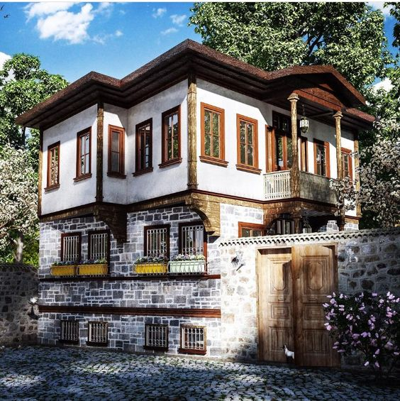

Ankara, çeşitli mimari tarzlara ve ev tiplerine ev sahipliği yapar. Şehir, geleneksel Türk evlerinden modern konutlara kadar geniş bir yelpazede evler sunar. Ankara'daki evler, şehrin tarihini, kültürünü ve yaşam tarzını yansıtan önemli bir unsurdur.
Ankara'nın tarihi semtlerinde, özellikle Altındağ ve Ulus gibi bölgelerde, geleneksel Türk evlerine sıkça rastlanır. Taş veya ahşap malzemelerden inşa edilmiş olan bu evler, genellikle avlulu ve bahçeli yapılar olarak tasarlanmıştır. Geleneksel Türk evleri, Ankara'nın geçmişine ve kültürel mirasına dair önemli birer simge olarak kabul edilir.
Ankara, hızla gelişen ve büyüyen bir şehir olduğundan, modern konut projeleri de oldukça yaygındır. Şehrin çeşitli bölgelerinde yüksek katlı apartmanlar, siteler ve villa tarzı konutlar bulunmaktadır. Modern konutlar genellikle şehir merkezine yakın bölgelerde ve alışveriş olanaklarına erişimi kolay yerlerde konumlanmıştır.
Ankara'nın çevresinde, özellikle Çayyolu, Bahçelievler ve Çankaya gibi semtlerde, geniş bahçeli evlere sıkça rastlanır. Bu evler, genellikle ailelerin tercih ettiği ve yeşil bir yaşam alanı arayanların ilgisini çeken konutlardır. Geniş bahçeli evler, şehir yaşamından uzaklaşıp doğayla iç içe yaşamak isteyenler için ideal bir seçenektir.
Ankara'daki evler, şehrin zengin kültürel ve sosyal yapısını yansıtır. Geleneksel Türk evleri, şehrin tarihini korurken modern konutlar şehrin geleceğini temsil eder. Ankara'nın evleri, farklı mimari tarzları ve yaşam tarzlarıyla şehre renk katar.
